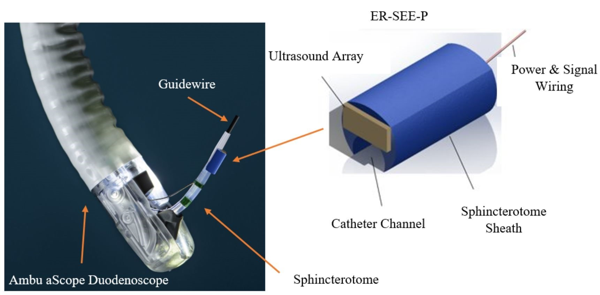
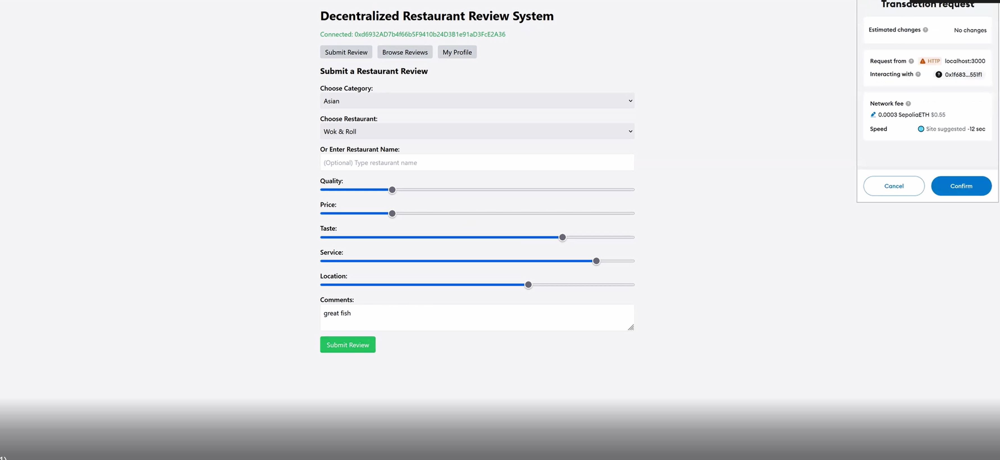
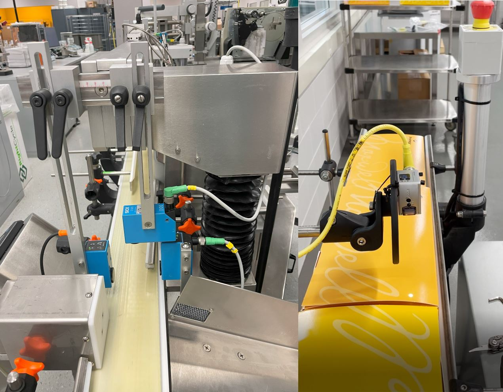
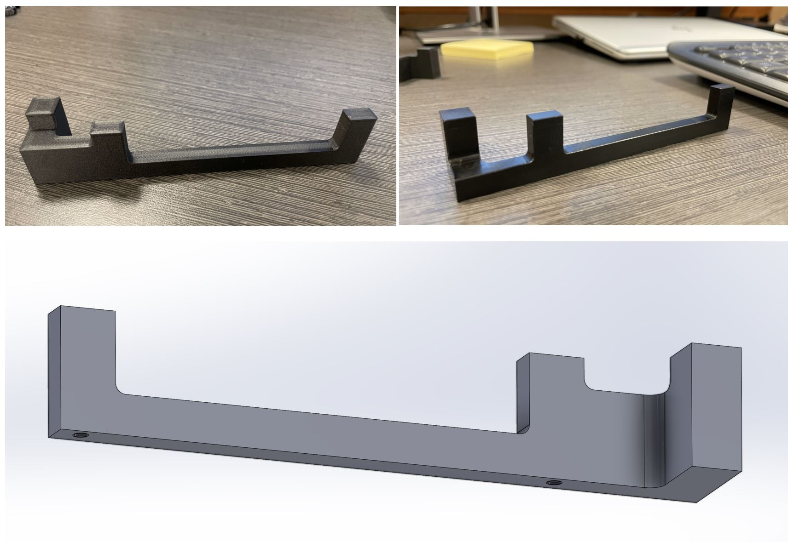
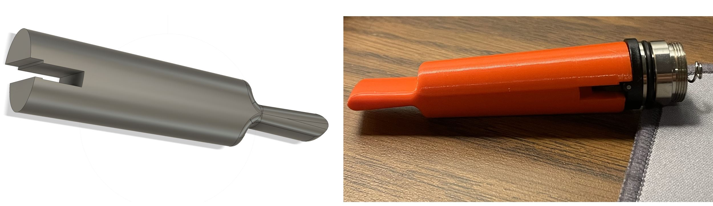

Progress of a Biomedical Innovator
My name is Colten Palkon, and I’m a dedicated biomedical engineer with a passion for innovation, collaboration, and high-quality execution. This site highlights a collection of my projects and the skills I’ve developed throughout my academic and professional journey. I approach every endeavor with full commitment, driven by a mindset that values initiative, attention to detail, and going the extra mile. I thrive in team environments, where I’m able to recognize and leverage the unique strengths of those around me. I believe in asking thoughtful questions, embracing challenges, and continuously refining ideas until the most effective solution emerges—often through iteration and an open mind. Over time, I’ve built a reputation as someone who gets things done, with precision and persistence. I invite you to explore my work and hear from those I’ve had the privilege of collaborating with. And with that, it’s time to get back to building the next project. — Colten
ER-SEE-P: A Duodenoscope Ultrasound Attachment to Aid Navigation to the Bile and Pancreatic Ducts in Endoscopic surgery

DAP Reviews: A Decentralized Review System using Blockchain Technology, "DAP Reviews – Trust the Crowd, Not the Cloud."

Automation Projects including UV Sensor instalttion for label presence and Color Sensor to detect package orientation

3D printing and and Reverse Engineering projects



What Others Say
"Colten fearlessly tackled numerous critical projects during his time with Promega. He approached his work with focus, determination, and a genuine desire to contribute. I was impressed with his ability to quickly diagnose an issue, navigate challenges and push through roadblocks to deliver well-thought-out solutions. He worked collaboratively with team members, showing strong communication skills and a clear commitment to improving safety, quality, delivery, and productivity. Colten’s responsiveness and proactive mindset made him a dependable and effective contributor. His professionalism and positive attitude left a strong impression, and I have no doubt he will continue to excel in his career. "
"As a high school freshman with great hitting mechanics, but who had not yet hit his growth spurt - the coaching staff deemed Colten Palkon the future. Little did we know that his growth would not simply lead to increased playing time through his high school baseball career, but a pursuit of his dreams and a degree in biomedical engineering from Georgia Tech. Needless to say, "The Future's" arrived and it is bright. You can't coach tenacity and hard work, but you just hope for it and Colten has it. Continue to swing for the fences, Colten."
"During his time with the Instrumentation Department at the Promega Corporation, Colten consistently demonstrated a high level of professionalism, technical competence, and a strong willingness to learn. Despite the complexity of our electromechanical assemblies, he quickly adapted to our processes and demonstrated keen attention to detail. One of Colten’s standout qualities is his initiative and willingness to find opportunities that add value to a team. He communicated clearly and asked thoughtful questions that reflected both curiosity and critical thinking. In addition to his technical skills, Colten brought a positive and collaborative energy to the team. He worked well with cross-functional groups and showed genuine respect for colleagues across all levels, including assembly personnel, engineers, and management. I am confident that Colten will bring the same level of enthusiasm and diligence to his future endeavors. I highly recommend him for any opportunity that aligns with his career goals and strengths."
"Having known Colten for a number of years, I can attest to his outstanding character, leadership, and intellectual prowess. Colten achieved the prestigious Eagle Scout rank through dedication and commitment to the Scout Oath and Law. His Eagle Scout project demonstrated his ability to plan strategically, rally a team of volunteers, and deliver a project with significant community impact. His leadership in this endeavor, marked by clear communication and problem-solving, exemplify the skills he later applied in academic settings at GT. His ability to tackle complex problems, whether researching possible drug treatments or performing research on the regulatory aspects of medical devices, reflects the analytical rigor and innovative spirit that Georgia Tech fosters. I wholeheartedly recommend Colten Palkon for any opportunities you may have. His technical expertise, grounded in his Georgia Tech education, and his leadership, honed through Scouting, make him an exceptional candidate."
"While working at Promega, Colten lived with my family, so I had the unique opportunity to observe his character, work ethic, and growth up close. I can say without hesitation that he demonstrates the integrity, initiative, and technical curiosity that are hallmarks of a strong early-career biomedical engineer. He is deeply responsible—often out the door before 7:00 a.m.—and shows strong follow-through in everything he undertakes. He has a willingness to take advantage of opportunity. Demonstrated by engaging with cross-functional teams, participate in company-wide events, and volunteering for new projects. At Promega, Colten earned praise from his colleagues and managers for the way he approached challenges. He did not wait for assignments to be handed to him; rather, he identified areas for improvement, collaborated with technicians, and drove permanent changes in processes. His work had a tangible impact across key operational metrics. Colten’s educational journey—from Northern Illinois University to Georgia Tech’s competitive Biomedical Engineering program—further reflects his ambition, grit, and capacity to grow. He is a self-motivated learner, a principled team member, and a young engineer with tremendous potential. I would recommend him without reservation for any opportunity, especially project-based roles that require initiative, analytical thinking, and strong interpersonal values."
"Colten joined us with a clear focus on learning and contributing from day one. His interest in sensor integration and biomedical systems aligned well with our projects, and he consistently brought thoughtful insights to the table."